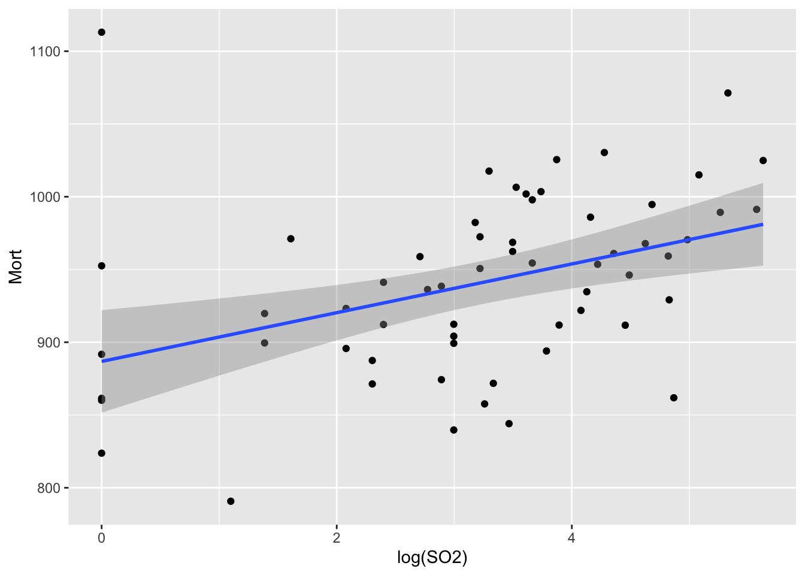

# package install list
url <- 'https://raw.githubusercontent.com/pstat197/pstat197a/main/materials/scripts/package-installs.R'
source(url)
# clear environment
rm(list = ls())Course technology overview
Read this and complete all instructions in the ‘action’ boxes during your lab section. Your TA will walk you through the activity and help to troubleshoot issues and answer any questions along the way.
Objectives:
get oriented with RStudio and RStudio projects
install packages
accept a GitHub classroom team assignment
clone a repository
Prerequisites
To complete the activity you’ll need to:
have all of the software listed on the course technology page installed;
find (or create) your GitHub account credentials (if you are creating an account for the first time, see advice on choosing a username).
ImportantAction
Preparations:
- Log in to your GitHub account.
- Open your GitHub client.
- Open a new session in RStudio.
- Create a class folder for PSTAT197 somewhere on your machine, e.g.,
~/documents/pstat197.
RStudio projects
First we’ll get acquainted with the basic functionality of the RStudio IDE and the use of projects as a means of organizing files. If you’ve already used RStudio, great – this will still serve to introduce you to how we’ll use RStudio projects in this class.
RStudio Setup
Your TA will briefly review the (default) layout of the RStudio IDE. You should be able to identify/find the following:
console
terminal
file navigator
environment
history
We’ll use several R packages throughout the quarter. Some of these we will install on the go, but we can install several that we’ll rely on now.
ImportantAction
Install packages
Navigate to the console and copy-paste the following commands. You only need to do this once. This will take a minute or two to complete.
Create a local project
Projects are a means of keeping your work organized. When you create a project in a directory on your local machine, RStudio keeps track of project metadata, history, and the working environment so that every time you open the project you see whatever you had open when you last closed it.
ImportantAction
Create a new project:
Select File > New project
Create the project in a new directory as a subdirectory of your class folder
Name it
example-project
Comment: when naming files it’s good practice to avoid spaces, special characters, and the like. A naming convention we try to follow: choose a descriptive name comprising 1-3 words or common abbreviations separated by hyphens.
Take a moment to observe the file navigator. It should consist of a single example-project.Rproj file.
Add content
We may as well populate the project with a few files – so let’s add a dataset and write a short script, as if we’re just starting a data analysis.
ImportantAction
Retrieve data and store a local copy
Open a new script: File > New File > R Script
In the navigator, create a folder called
dataand a folder calledscriptsCopy and paste the code chunk below into your script.
Execute once, then save in the
scriptsfolder asdata-retrieval.Rand close
library(tidyverse)
# retrieve pollution data
url <- 'https://raw.githubusercontent.com/pstat197/pstat197a/main/materials/labs/lab1-setup/data/pollution.csv'
pollution <- read_csv(url)
# write as csv to file
write_csv(pollution, file = 'data/pollution.csv')
# clear environment
rm(list = ls())Next, we’ll do a simple regression analysis.
ImportantAction
Create a script
Create a new script as before
Copy-paste the code chunk below into your script
Execute once and examine the results
Save in the
scriptsfolder asslr-analysis.R
library(tidyverse)
# load data
pollution <- read_csv('data/pollution.csv')
# examine scatterplot with SLR fit
ggplot(pollution,
aes(x = log(SO2), y = Mort)) +
geom_point() +
geom_smooth(method = 'lm')
# compute SLR fit
fit <- lm(Mort ~ log(SO2), data = pollution)
broom::tidy(fit)# A tibble: 2 × 5
term estimate std.error statistic p.value
<chr> <dbl> <dbl> <dbl> <dbl>
1 (Intercept) 887. 17.6 50.4 1.37e-49
2 log(SO2) 16.7 4.99 3.35 1.40e- 3# interpret
fit_ci <- confint(fit, parm = 'log(SO2)')*log(1.2)
paste('With 95% confidence, every 20% increase in sulfur dioxide pollution is associated with an increase in two-year mortality rate between',
round(fit_ci[1], 2),
'and',
round(fit_ci[2], 2),
'per 100k', sep = ' ') %>%
print()[1] "With 95% confidence, every 20% increase in sulfur dioxide pollution is associated with an increase in two-year mortality rate between 1.23 and 4.87 per 100k"Congrats on your first project! You can close the RStudio session now.
We’ll be using projects structured much like what you just set up, but with one catch: we’ll link up our RStudio projects with shared repositories so that we can all collaborate on the same set of project files.
GitHub repositories
We will be distributing course assignments as repositories via GitHub Classroom. A repository is simply a storage space.
Here we’ll walk you through how to access and copy the files in a repository just as you will for course assignments. The first step is to accept an assignment through a link we’ve given to you – this will create a repository for you with the files we intend for you to have.
For now, we’ll make a ‘group sandbox’ that you can play in during our next class meeting.
ImportantAction
Accept an assignment in GitHub Classroom
- Follow the link to accept the group-sandbox assignment. Since it’s a group assignment, you will be prompted to join a team.
- Join the team for the table you sat at during last class meeting. If you don’t remember, check your attendance form receipt.
You should be directed to a team repository on github.com. You may need to refresh your browser. Keep this window open; you will need the URL.
Git and GitHub
At some point in time – possibly quite recently – you had to install Git on your local machine, as well as create a GitHub account. So, Git and GitHub are two different things.
Git is version control software that enables you to systematically track and control file changes within a repository – a collection of files possibly with some directory structure. (The definition of ‘repository’ is simply ‘storage place’.)
GitHub is an online platform for hosting repositories remotely. Anyone with access to a repository can make changes to files in the repository, and this enables multiple people to collaborate on code.
local <> remote
Usually remote repositories are not updated directly because contributors need to execute codes to test their changes and the remote server that hosts the repository is not equipped to do this.
Instead, contributors will prepare changes on their own machine where they can test them, and then update the remote repository once their changes are complete.
This process of implementing file changes in a repository involves communicating information between local and remote locations. For this purpose a local copy of the remote repository is needed.
Cloning a repository
In Git lingo, a clone is a local copy of a remote repository. Creating a clone copies files and establishes the link between local and remote repositories so that changes can be sent to and received from the remote repository. You only need to create a clone once.
To clone a repository, all one needs is:
the remote location URL;
the local destination where the clone will be created;
permission from the repository owner, if private.
Here you’ll clone the group sandbox repository you just created/joined. You will need the URL; if you happened to close the page when you accepted the assignment earlier, you should be able to find the repository from your home page on github.com.
ImportantAction
Clone the sandbox repository:
- Open your GitHub client (GitKracken or GitHub Desktop or similar) and ensure you are logged in to your GitHub account.
- Look for a ‘Clone Repo’ menu item or similar and simply input the URL and the place you’d like to clone it; proceed through any prompts.
- Check your file navigator to confirm that the repository files were copied.
An alternative possibility is to create the clone using a terminal command. In the terminal, navigate to the desired destination, and input:
git clone https://github.com/USERNAME/REPONAME
NoteRemarks
On terminal commands:
It’s recommended to manage Git actions through a visual client, as it’s much easier to see and understand what’s happening.
However, if you know exactly what you’re doing, executing simple actions via Git bash in the terminal can be more efficient at times.
For example, you can keep a terminal open in RStudio and manage your repository workflow from there, without having to toggle between environments.
Try experimenting with terminal commands from RStudio after you have a little experience with basic Git actions.
Checklist
Have you completed all of the activity action items?
- Install software: R, RStudio, Git, and a GitHub client
- Create a GitHub account
- Install R packages that will be used frequently
- Create a local project in RStudio
- Accept the group sandbox assignment on GitHub Classroom
- Clone the group sandbox repo